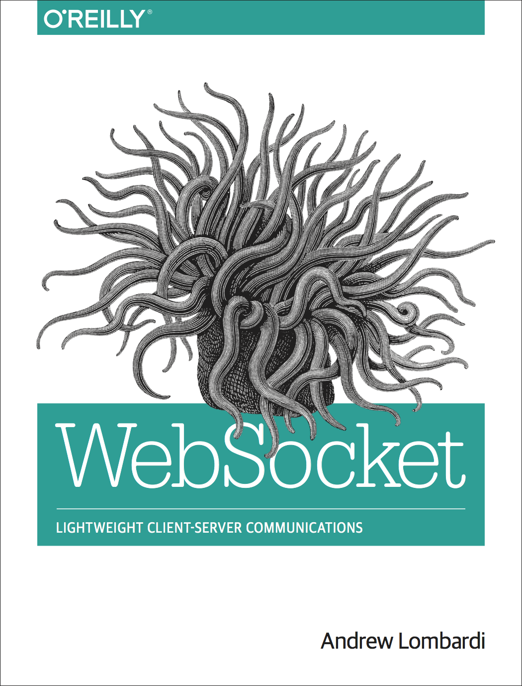

AngularJS and Flask sitting in a tree
About Me
About Me
14 Years in Business
Software Consultants
International Speakers
Training
App Developer (Objective-C, Java, JavaScript, Python)
To our success!
What we'll cover
- Installing Flask
- Writing RESTful API
- Kickstarting AngularJS
- Modules, Controllers, Services, and templates
Why Flask?
- Simple and extensible
- Add core functionality via extensions
- Endlessly customizable
Install flask
$ pip install Flask
$ easy_install Flask
First install virtualenv
Installing virtualenv
$ pip install virtualenvConfiguring virtualenv for example
$ virtualenv contalk
$ source contalk/bin/activate
$ pip install -U Flaskrequirements.txt
$ pip freeze > requirements.txt
$ cat requirements.txt
Flask==0.10.1
Flask-RESTful==0.2.12
virtualenv Directory Structure
.
└── contalk
├── bin
├── include
│ └── python2.7
└── lib
└── python2.7
└── site-packages
Segmenting our dependencies and allow testing multiple python environments
Hello World example
from flask import Flask
app = Flask(__name__)
@app.route('/hello')
def hello():
return 'Hello, World!'
if __name__ == '__main__':
app.run()
Save to helloworld.py
$ python helloworld.py
Example: Conference Talk
ConTalk will be the example we'll use throughout this talk. We'll build a RESTful API using Flask and use that API from AngularJS to build out a useful interface.
Sample JSON Data
[{
"id": 1,
"name": "AngularJS and Flask sitting in a tree",
"speaker": "Andrew Lombardi",
"technology": "JavaScript, Python",
"description": "An awesome talk about the JavaScript framework AngularJS and using it with Flask to build a RESTful service",
"time": {
"begin_time": "14:25",
"end_time": "15:10"
},
"date": "2014-11-18"
},
{
"id": 2,
"name": "Simple API's with bottle.py",
"speaker": "Andrew Lombardi",
"technology": "Python",
"description": "An awesome talk",
"time": {
"begin_time": "14:25",
"end_time": "15:10"
},
"date": "2014-11-19"
}]
Get list of talks
GET /talks
from flask import Flask, jsonify, request
from flask.ext.restful import Api, Resource
app = Flask(__name__)
api = Api(app)
class TalksAPI(Resource):
def get(self):
return jsonify({"data": talks})
api.add_resource(TalksAPI, '/api/talks', endpoint='talks')
if __name__ == '__main__':
app.run(host='0.0.0.0', debug=True)
Flask-Restful
Lightweight abstraction for building a REST api
We're using a simple in-memory var talks
Can integrate with any data source, SQLAlchemy, MongoEngine, etc
Testing GET talks list
curl -i -X GET http://localhost:5000/api/talks
HTTP/1.0 200 OK
Content-Type: application/json
Content-Length: 727
Access-Control-Allow-Origin: *
Access-Control-Allow-Methods: HEAD, GET, POST, OPTIONS
Access-Control-Max-Age: 21600
Access-Control-Allow-Headers: ACCEPT, CONTENT-TYPE, X-REQUESTED-WITH
Server: Werkzeug/0.9.6 Python/2.7.6
Date: Tue, 18 Nov 2014 01:10:12 GMT
{"data": [{"date": "2014-11-18","description": "An awesome talk about the JavaScript framework AngularJS and using it with Flask to build a RESTful service","id": 1,"name": "AngularJS and Flask sitting in a tree","speaker": "Andrew Lombardi","technology": "JavaScript, Python","time": {"begin_time": "14:25","end_time": "15:10"}}]}
Adding a talk
POST /talks
import json, uuid
def post(self):
json_data = json.loads(request.data)
new_id = uuid.uuid4()
json_data['id'] = new_id
talks.append(json_data)
return jsonify({"id": json_data['id']})
What about PUT, PATCH, and DELETE?
With Flask-Restful if we don't define functions for handling HTTP methods, it
sends back a 405 Method Not Allowed
Overview of REST
Nouns not verbs
| Bad | Good |
|---|---|
| getTalks | GET /talks |
| addTalk | POST /talks |
| removeTalk | DELETE /talks/<uuid> |
| getTalk | GET /talks/<uuid> |
HTTP methods = verbs
| Method | Action |
|---|---|
GET |
List the members of the collection |
PUT |
Replace the entire collection with another collection |
POST |
Create new entry in collection |
DELETE |
Delete the entire collection |
HTTP methods = verbs
http://example.com/resources/42
| Method | Action |
|---|---|
GET |
Return the referenced member of the collection |
PUT |
Create or update the referenced member of the collection |
POST |
Generally unused on specific members |
DELETE |
Delete the referenced member of collection |
GET and POST constraints
Sometimes, firewalls, proxies, or just sending a unique HTTP method via an HTTP form is not allowed
First we write a middleware to take X-HTTP-Method-Override and replace REQUEST_METHOD with that value
class HTTPMethodOverrideMiddleware(object):
allowed_methods = frozenset([
'GET',
'HEAD',
'POST',
'DELETE',
'PUT',
'PATCH',
'OPTIONS'
])
bodyless_methods = frozenset(['GET', 'HEAD', 'OPTIONS', 'DELETE'])
def __init__(self, app):
self.app = app
def __call__(self, environ, start_response):
method = environ.get('HTTP_X_HTTP_METHOD_OVERRIDE', '').upper()
if method in self.allowed_methods:
method = method.encode('ascii', 'replace')
environ['REQUEST_METHOD'] = method
if method in self.bodyless_methods:
environ['CONTENT_LENGTH'] = '0'
return self.app(environ, start_response)GET and POST constraints
Here's a test using the middleware
from flask import Flask
app = Flask(__name__)
app.wsgi_app = HTTPMethodOverrideMiddleware(app.wsgi_app)Serving our API from different domain
CORS
- C . ross
- O . rigin
- R . esource
- S . haring
OPTIONS and preflight
More complex CORS request comes with preflight
- Custom headers are used in the request
- An HTTP method other than GET, HEAD, or POST used
- POST used but Content-Type other than
application/x-www-form-urlencoded,multipart/form-data,text/plain
CORS with Flask-Restful
class MyAPI(Resource):
def options(self):
return ""
api.decorators = [cors.crossdomain(origin='*',
headers=['accept', 'Content-Type', 'X-Requested-With'])]
api.add_resource(MyAPI, '/api/my', endpoint='my')
Member REST calls
Get referenced talk
GET /talks/<uuid>
def get(self, id):
for talk in talks:
if str(talk['id']) == str(id):
return jsonify(talk)
abort(404)
Update referenced talk
PUT /talks/<uuid>
def put(self, id):
for idx, talk in enumerate(talks):
if str(talk['id']) == str(id):
json_data = json.loads(request.data)
json_data['id'] = id
talks[referenced_talk_idx] = json_data
return jsonify(json_data)
abort(404)
return
Deleting referenced talk
DELETE /talks/<uuid>
def delete(self, id):
for idx, talk in enumerate(talks):
if str(talk['id']) == str(id):
del talks[referenced_talk_idx]
return
abort(404)
return
Integration with middleware
from cherrypy import wsgiserver
from app import app
d = wsgiserver.WSGIPathInfoDispatcher({'/': app})
server = wsgiserver.CherryPyWSGIServer(('0.0.0.0', 8080), d)
if __name__ == '__main__':
try:
server.start()
except KeyboardInterrupt:
server.stop()
Save as server.py
$ python server.py
Why AngularJS?
- Extends the DOM -- designer friendly
- Leverages Dependency Injection
- Modularity
- Fully embraces testing
AngularJS Feelings Over Time

Hello, World Example
<!DOCTYPE html>
<html ng-app>
<head>
Hello World!
</head>
<body>
Name:
Hello {{ name }}
</body>
</html>
Kickstart with ngbp
Provides a basic framework for kickstarting AngularJS projects. Has an awesome directory structure and bakes in:
- Twitter Bootstrap
- Angular UI
- Angular Bootstrap
- Font Awesome
- Grunt
- LESS
ngbp directory structure
ng-boilerplate/
|- grunt-tasks/
|- karma/
|- src/
| |- app/
| | |- <app logic>
| |- assets/
| | |- <static files>
| |- common/
| | |- <reusable code>
| |- less/
| | |- main.less
|- vendor/
| |- angular-bootstrap/
| |- bootstrap/
| |- placeholders/
|- .bowerrc
|- bower.json
|- build.config.js
|- Gruntfile.js
|- module.prefix
|- module.suffix
|- package.json
UI Routing
$routeandngRoute= part of core- 3rd-party
ui-router= best
ui-router
Show list of talks
.config(function config( $stateProvider ) {
$stateProvider
.state( 'talks', {
url: '/talks',
views: {
"main": {
controller: 'TalksCtrl',
templateUrl: 'talks/talks.tpl.html'
}
},
resolve: {
talks: function(talksService){
return talksService.getTalks();
}
},
data:{ pageTitle: 'Talks' }
})
});Talks List controller
.controller( 'TalksCtrl', function TalksCtrl( $scope, talks, talksService, ngTableParams ) {
$scope.talks = talks;
$scope.remove = function(selectedTalk) {
selectedTalk.remove().then(function() {
talksService.removeTalk(selectedTalk, $scope.talks);
});
};
/* jshint ignore:start */
$scope.tableParams = new ngTableParams({
count: $scope.talks.length
},{
counts: []
});
/* jshint ignore:end */
})
Talks List template
talks.tpl.html
{{talk.name}}
{{talk.speaker}}
{{talk.date}}
REST module
- $http and $resource = part of core
- 3rd-party Restangular = best
Restangular
var talks = Restangular.all("talks").getList();
GET /talks
Response Interceptor
RestangularProvider.addResponseInterceptor(function(data, operation, what, url, response, deferred) {
var extractedData;
if (operation === "getList") {
extractedData = data.data;
} else {
extractedData = data;
}
return extractedData;
});
Our Angular Service
GET /talks
.factory("talksService", function(Restangular){
return {
getTalks: function(){
return Restangular.all("talks").getList();
},
};
})POST /talks
addTalk: function(talk) {
return Restangular.all("talks")
.post(talk);
}DELETE /talks/<uuid>
removeTalk: function(selectedTalk, talks) {
var index = talks.indexOf(selectedTalk);
if(index > -1) {
talks.splice(index, 1);
}
},GET /talks/<uuid>
getTalk: function(id) {
return Restangular.one("talks", id).get();
},PUT /talks/<uuid>
updateTalk: function(talk) {
return talk.put();
},View Talk Route
.state( 'talksview', {
url: '/talks/view/:talkID',
views: {
"main": {
controller: 'TalksViewCtrl',
templateUrl: 'talks/talks-view.tpl.html'
}
},
resolve: {
talk: function(talksService, $stateParams) {
return talksService.getTalk($stateParams.talkID);
}
},
data:{ pageTitle: 'View Talk' }
})View Talk Controller
.controller( 'TalksViewCtrl', function TalksViewCtrl( talk, $scope, $state, $stateParams ) {
$scope.headerText = 'View Talk';
$scope.id = $stateParams.talkID;
$scope.talk = talk;
})View Talk Template
talks-view.tpl.html
{{ headerText }}
- Return to overview
...
{{ talk.name }}
...
Edit Talk Route
.state( 'talksedit', {
url: '/talks/edit/:talkID',
views: {
"main": {
controller: 'TalksEditCtrl',
templateUrl: 'talks/talks-edit.tpl.html'
}
},
resolve: {
talk: function(talksService, $stateParams) {
return talksService.getTalk($stateParams.talkID);
}
},
data:{ pageTitle: 'Edit Talk' }
})Edit Talk Controller
.controller( 'TalksEditCtrl', function TalksEditCtrl( talk, $scope, talksService, $state, $stateParams ) {
$scope.headerText = 'Edit Talk';
$scope.id = $stateParams.talkID;
$scope.talk = talk;
$scope.save = function(isValid) {
talksService.updateTalk($scope.talk).then(function() {
$state.go('talksview', {talkID: $scope.talk.id});
});
};
$scope.cancel = function() {
$state.go('talksview', {talkID: $scope.id});
};
})Edit/Add Talk Template
talks-edit.tpl.html
Add Talk Route
.state( 'talksadd', {
url: '/talks/add',
views: {
"main": {
controller: 'TalksAddCtrl',
templateUrl: 'talks/talks-edit.tpl.html'
}
},
data:{ pageTitle: 'Add Talk' }
})
;
})Edit Talk Controller
.controller( 'TalksAddCtrl', function TalksAddCtrl( $scope, talksService, $state ) {
$scope.headerText = 'Add Talk';
$scope.talk = {};
$scope.save = function(isValid) {
talksService.addTalk($scope.talk).then(function() {
$state.go('talks');
});
};
$scope.cancel = function() {
$state.go('talks');
};
})DEMO
AngularJS 2
And now, forget everything.
Helpful Links
New WebSocket book
Q & A
Andrew Lombardi / @kinabalu
kinabalu @ irc://irc.freenode.net
#javascript